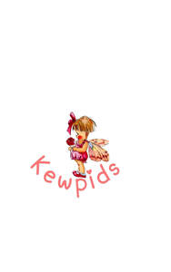

Trade Mark Journal No.2026/001 2 January 2026
UK00004304365 2 December 2025 (9,14,16,19,21,24,27,28,30)

- Class 9
- Audio books; Talking books; Downloadable series of children’s books; Downloadable electronic books; Computer games; Computer games software; Computer games programs; Computer game software; Downloadable computer game software.
- Class 14
- Jewellery; Necklaces [jewellery]; Brooches [jewellery]; Bracelets [jewellery]; Brooches [jewellery, jewelry (Am.)]; Trinkets [jewellery]; Gold jewellery; Decorative brooches [jewellery]; Rings [jewellery]; Shoe jewellery; Necklaces [jewelry]; Jewellery boxes; Jewellery for pets.
- Class 16
- Prints; Giclee prints; Art prints; Fine art prints; Watercolor paintings; Printed sewing patterns; Watercolours [paintings]; Books; Fiction books; Comic books; Writing books; Books for children; Cookery books; Music books; Coloring books; Fantasy books; Autograph books; Colouring books; Painting books; Baby books [storybooks]; Picture books.
- Class 19
- Stone ornaments; Ornaments made of stone.
- Class 21
- Ceramic ornaments; Glass ornaments; China ornaments; Ornaments made of porcelain; Ornaments [statues] made of porcelain; Ornaments made of ceramics; Ornaments made of earthenware; Ornamental figurines made of porcelain.
- Class 24
- Duvet covers; Pillow covers; Eiderdown covers; Covers for pillows; Mattress covers; Comforters [covers]; Bed covers; Sofa covers; Covers for cushions; Cushion covers; Quilt covers; Cot covers; Table covers; Bean bag covers.
- Class 27
- Play mats.
- Class 28
- Toys; Plush toys; Toy figurines; Playsets for dolls; Toy dolls; Toy brooches; Doll playsets; Bobblehead dolls; Collectable toy figures; Toy playsets; Toy figures; Porcelain dolls; Christmas dolls; Toys, games and playthings for pet animals; Pet toys; Toy action figurines; Play sets for action figures; Play houses; Balloons (Play -); Toy tea sets; Modular toy play houses; Playing cards; Jewellery for dolls; Toy jewellery; Decorations and ornaments for Christmas trees; Ornaments for Christmas trees; Musical Christmas tree ornaments.
- Class 30
- Confectionery; Sweets.
Sallie Polkinghorn
Simon Polkinghorn